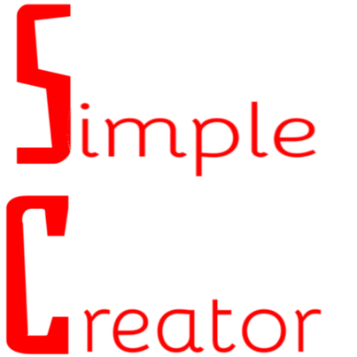

Ogółem jestem otwarty szybko pojmuje
i wiem jak wykonać wiele zadań
umiem też znaleść w internecie jeśli trzeba
C# (głównie korzystałe z konsoli)
-znam wszystkie pętle
-znam zmienne
-znam zbiory
-umiem obsłużyć klasy
-umiem obsłużyć metody
znam ogółem podstawy
HTML
-znam grid
-znam flex
-znam hover
i podstawy
C++ (głównie korzystałem z konsoli)
-znam zmienne
-znam wszystkie pętle
-znam zbiory
-umiem obsłużyć metody
i podstawy
Python (głównie korzystałem z konsoli)
-wiem jak używać zmiennych
-znam pętle
-umiem użyć metod
i podstawy
technik informatyk
-ucze się w zsk jestem na poziomie 2 klasy
-umiem jako tako składać komputery
-umiem obsłużyć komputer
i ogólne rzeczy
jestem otwarty